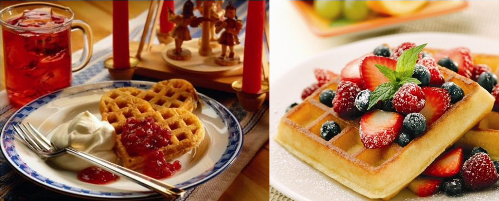
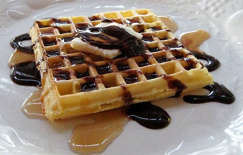
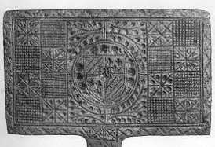
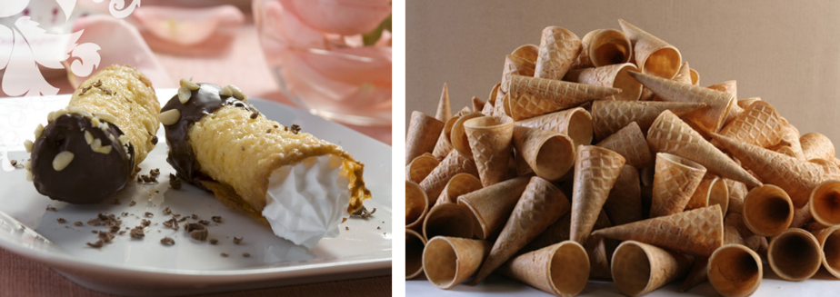
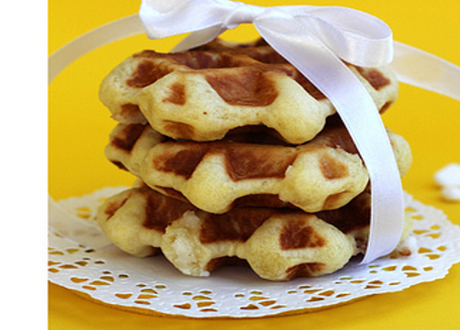
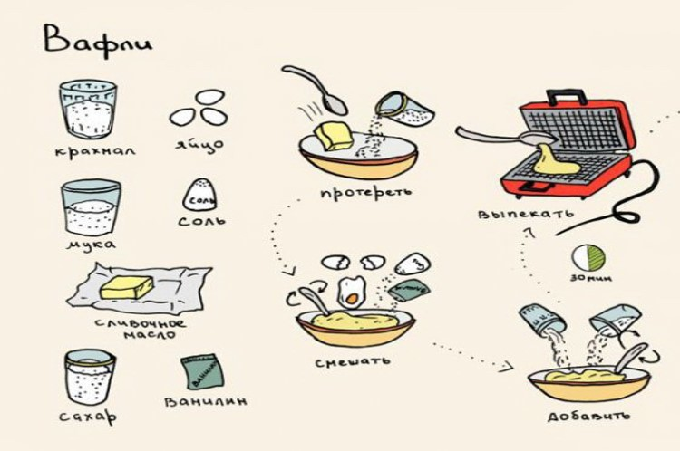

История вафель
Вафли – один из популярных во всем мире видов кондитерских изделий, а их разновидностей и рецептов насчитываются сотни.
Точную дату и имя человека, который изобрел вафли, а также страну их происхождения, история не сохранила. Однако считается, что вафли появились в Древней Греции – они были похожи на оладьи, готовились из сыра и трав, выпекались на горячих углях и мало напоминали своих современных собратьев.
Если говорить о современной истории этого лакомства, то она начинается в Германии в XIII века. Лингвисты полагают, что название выпечки произошло от немецкого «waffle» - соты, ячейки. Назначение этих ячеек то же самое, что и у пчелиных сот: удерживать мягкий наполнитель — крем, взбитые сливки, сироп, варенье, масло, мед и т. д.
В XIV веке вафли стали считаться настоящим кондитерским изыском. В Европе вафли считались настоящим шиком, достойным королей. Их подавали по особым датам, готовили долго, тщательно замешивая тесто, готовя нежные прослойки. Так изобретались всё новые рецепты хрустящего лакомства. Проходит время, и вафли становятся все более популярными. Так, бельгийская легенда гласит, что вафли в Бельгию были завезены в XVIII веке поваром принца Льежского. Постепенно вафли приобрели популярность во всей Бельгии. В Чехии первые «курортные вафли» появились также в XVIII веке, они наполнялись миндалем и сахаром, и были светло-коричневого цвета. Прочное печенье, ребристая поверхность которого не позволяет сползать с него начинке, стало настоящей находкой для кондитеров.
Вафли, при этом, необязательно должны быть в клеточку — важно, чтобы на поверхности этого специфического вида печенья, выпекаемого между двух раскаленных металлических противней, присутствовал какой-либо ячеистый рельеф.
Придворные кондитеры нередко создавали «гербовые» шедевры, используя для этого «фамильные» формы.
Настоящими поклонниками этого знаменитого лакомства были Иоганн Штраус и Фредерик Шопен, Иоганн Вольфганг фон Гете и Пабло Неруда, Альфред Нобель и Зигмунд Фрейд.
Популярность десерта росла, неудивительно, что многие европейские народы внесли свой вклад в совершенствование этого продукта.
Сами технологии приготовления оставались прежними: вафельницу нужно было хорошо разогреть, на одну из половинок вафельницы наливали тесто, плотно прикрывали второй половинкой, фиксировали замком, если он был, и готовили на огне или в печи.
Но поскольку невозможно было определить интенсивность нагрева, для приготовления равномерно прожаренных и румяных вафель необходима была достаточная сноровка, да и тесто могло в любой момент протечь. К тому же необходимо постоянно контролировать процесс приготовления. Вафельницу переворачивали с одной стороны на другую, чтобы содержимое пропеклось равномерно. И, хотя «ископаемой» вафельнице много веков, её аналоги использовали совсем ещё недавно бабушки и мамы некоторых из нас.

24 августа 1869 года Корнелиус Свартхаут, житель штата Нью-Йорк, запатентовал свое изобретение – первую сковородку для выпечки вафель. В США 24 августа считается днем вафель.
В этот день принято печь и лакомиться разнообразными кондитерскими изделиями с самыми разнообразными начинками. Американцы с утра направляются в кафе и рестораны, либо пекут вафли дома, обильно сдабривая их кленовым сиропом, вареньем.
Вафли стали настолько популярны, что для их выпекания создавались удивительные по тем временам, специализированные «отдельностоящие» гаджеты.
Такие сейчас можно встретить в музеях, так как «твердое» топливо было заменено электричеством. И инженеры не заставили себя долго ждать, так на свет появилась электровафельница.
Эта советская электровафельница весила «тонну», металла не пожалели. Во всяком случае, одной рукой ее сложно было открыть. Но вафли получались очень вкусные и хрустящие.
Современная пищевая промышленность выпускает тысячи тонн вафель ежедневно. В мире огромное количество людей, которые очень любят сладкую выпечку. Домашние вафли один из наиболее популярных представителей подобных продуктов. Вафли, приготовленные дома, своими руками, окажутся, безусловно, намного полезнее тех, которые куплены в магазине, поскольку в их состав будут входить только самые лучшие продукты. Кстати, приготовить вафли в хорошей современной электровафельнице вообще не сложно, с этим справится даже новичок в кулинарии. Любой сможет побаловать себя и близких вкуснейшей выпечкой, как только этого захочется.
Тонкие вафли
Соответственно, приготовленными на разных видах теста, с разнообразными добавками, ими можно бесконечно разнообразить свой стол. Вафли принято делить на два вида.
Первые - тонкие (их в нашей стране принято сворачивать в трубочки и наполнять кремом).
Пышные вафли
Вторые – пышные. Поскольку сам десерт считается, скорее, интернациональным, существует масса региональных особенностей его приготовления, в кухнях разных стран вафли делают по-своему. Таким образом, «традиционного» или «классического» рецепта приготовления таких вафель, как многие утверждают, не существует. Зато многие слышали о Бельгийских, Венских, Английских, Американских, Брюссельских, Льежских и иных вариантах этого замечательного лакомства.
Американские вафли, пожалуй, самые толстые из всего этого вафельного семейства, потому что в тесто обязательно добавляют разрыхлитель. Американские вафли едят не только как сладкое, но и как гарнир к мясным блюдам.
Голландские вафли пышные, часто подают с сиропом.
Скандинавские вафли принято выпекать в форме сердечек.
«Классические» толстые вафли, мягкие внутри и хрустящие сверху. Между вафельными листами можно положить любую начинку, что сделает вафли альтернативой пирогу.
Самые знаменитые - бельгийские вафли.
При этом существует два их вида: Брюссельские и Льежские вафли.
Брюссельские вафли, пышные, мягкие, отличаются воздушностью и нежностью, прямоугольной формы.
Льежские вафли более хрустящие. Перед выпечкой в тесто добавляют сахар. В процессе выпечки он карамелизируется.
Рецептов теста для выпечки вафель очень много, в каждой стране есть свои национальные особенности. Сегодня почти в любой стране мира можно встретить на прилавках кондитерских магазинов и лавок широкий ассортимент традиционных и экзотических вафель. Вафельное тесто состоит из муки, яиц и сахара – это основные ингредиенты, также, в зависимости от рецепта, в тесто могут добавляться сливки, молоко, минеральная вода, дрожжи, орехи, разрыхлители, соль, сода, вода, ваниль и другие ароматизаторы и добавки (до 10-12 ингредиентов). В тесто для вафель добавляют алкоголь: фруктовые наливки, коньяки и т.д. Лучше если все ингредиенты для теста перед смешиванием будут комнатной температуры. Сливочное масло или маргарин должны быть размягченными. Вафельницу перед выпеканием нужно прогреть минут 10. Если тесто для вафель жидкое, то размазывать его по вафельнице не нужно, если густое, не текучее, то перед тем как закрыть прибор его можно разровнять. Чтобы тесто после выпекания вафель не прилипало к вафельнице, лучше использовать не сахар, а сахарную пудру, слишком много этого продукта использовать не следует, иначе лакомство будет излишне колероваться. После выпечки не кладите вафли друг на дружку, а разложите их на решетку, для того, чтобы они не слиплись, и подсохнув, были хрустящими.
Самое главное, что нужно для приготовления вафель – это вафельница. Без нее никуда.